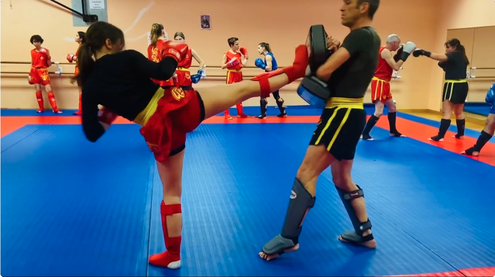
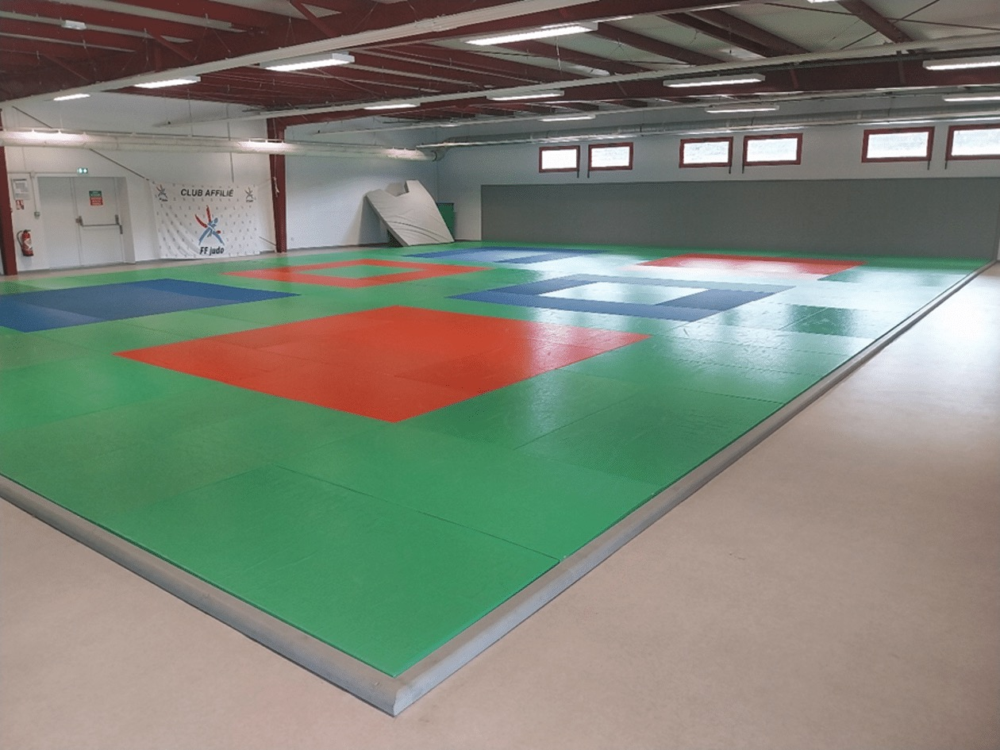
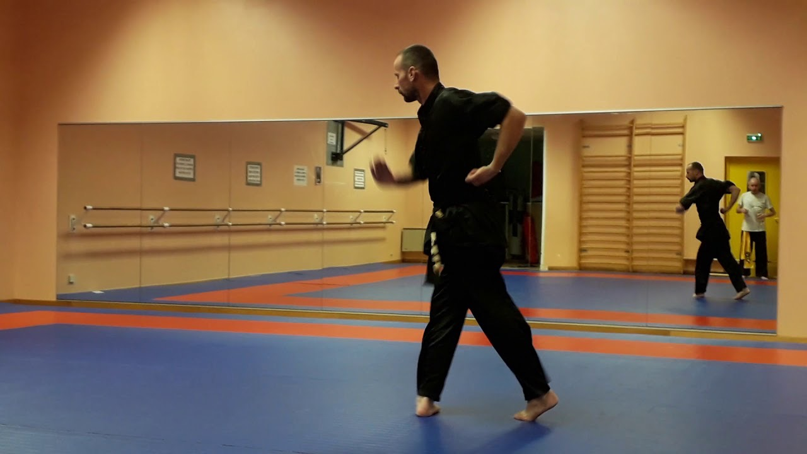
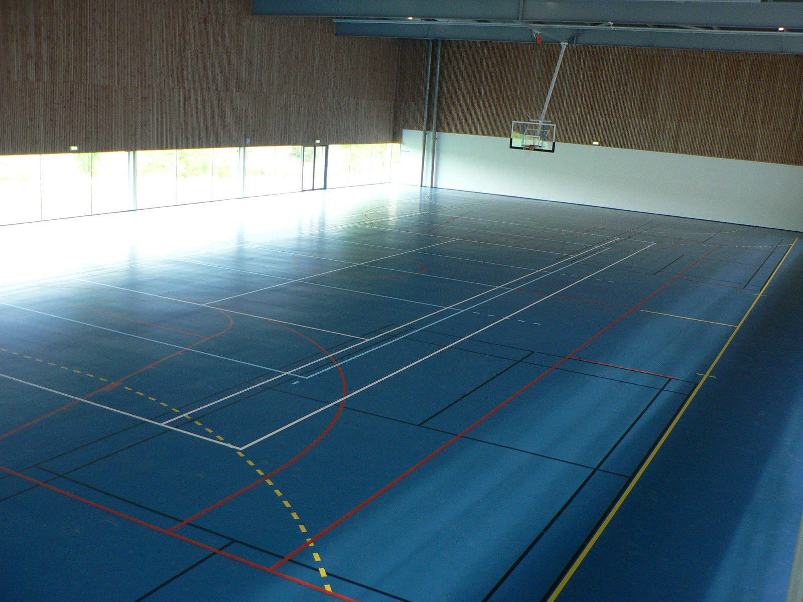

Gong Fang
Des mouvements de self-défense pour apprendre à se protéger efficacement en toute situation.
Depuis 20 ans, Taochinagot enseigne le Wushu — Kung Fu traditionnel, Sanda et Taolu — aux enfants comme aux adultes, du loisir à la compétition de haut niveau.
Yann Dussol, instructeur Sanda et Wushu, vous explique ce que ces arts martiaux apportent — bien-être, esprit de groupe et dépassement de soi.

Source : parcoursmetiers.tv — Lycée Saint-Paul, Vannes
Chaque discipline développe des qualités différentes — toutes partagent les mêmes valeurs d'exigence et de respect.
Des cours dispensés près de chez vous, dans le Morbihan.



Contactez-nous via le formulaire ou par téléphone pour choisir le dojo et le créneau qui vous convient. Vous assistez à un cours complet, sans engagement, pour découvrir l'ambiance et la discipline.
Non. Le Wushu se pratique à tout niveau physique : la souplesse et la condition s'acquièrent avec l'entraînement. Nos cours sont adaptés à chaque profil, du débutant au compétiteur.
Une tenue de sport souple suffit pour débuter. Nous vous indiquerons l'équipement spécifique (tenue, protections) si vous souhaitez poursuivre.
Nos cours enfants sont ouverts dès 7 ans, avec un enseignement adapté à leur âge et à leur développement.
Oui. Taochinagot accompagne les licenciés qui souhaitent se présenter en compétitions régionales et nationales, avec un encadrement par des coachs qualifiés (Coach A Sanda, arbitres nationaux).